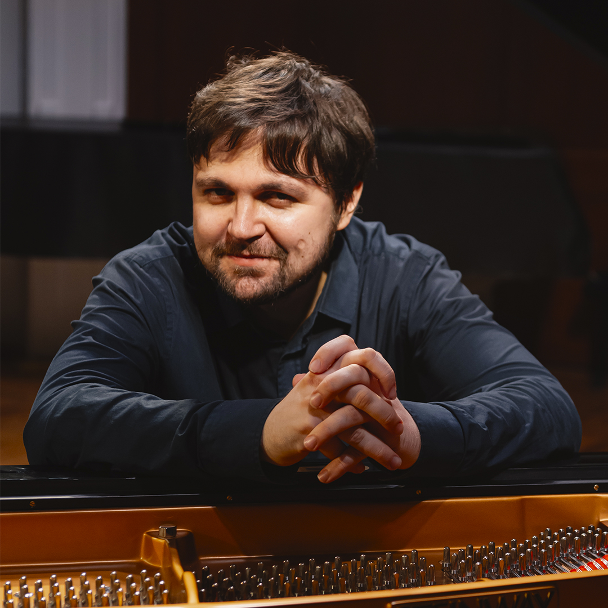
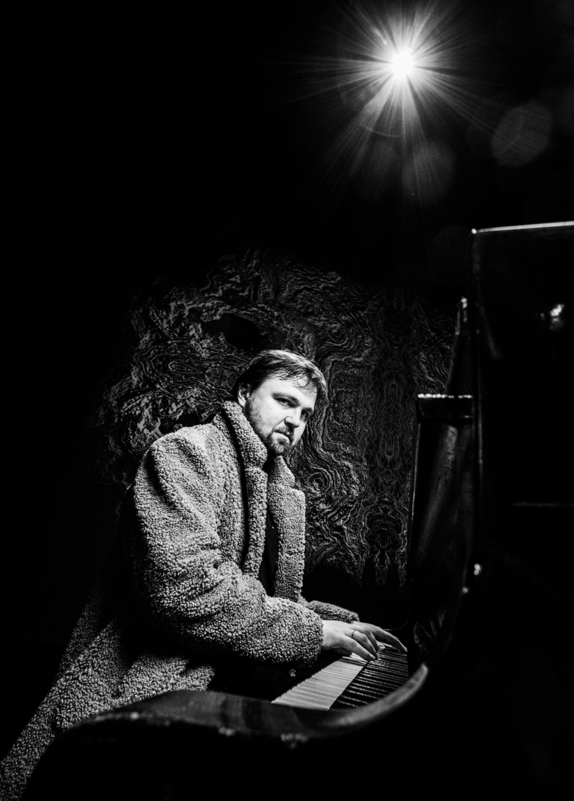

Иван Соколов

Пианист, педагог, автор аранжировок, фортепианной и камерной музыки, музыки к спектаклям.
В 2004 году окончил ДМШ №53 имени М. П. Мусоргского.
В 2008 году окончил АМУ при МГК имени П. И. Чайковского.
В 2010 и 2011 годах проходил стажировку как пианист у профессора Е. А. Левитана
В 2013 году окончил МГК имени П. И. Чайковского.
В 2016 году окончил ассистентуру-стажировку МГК имени П. И. Чайковского под руководством И. М. Кандинской
За время обучения участвовал международных конкурсах:
Конкурс ассоциации «Классическое наследие» (I премия, 2006, Москва)
Конкурс «Романтизм истоки и горизонты» (I премия, 2012, Москва)
Конкурс «Возрождение» (I премия, 2014, Гюмри)
Приглашённый артист на записи Радио Орфей, Канале Культура и прочих медиа площадках
С 2005 Иван ведёт активную зарубежную гастрольную деятельность. Пианист, чьё творчество востребовано во многих странах Европы, Азии, Ближнего Востока. Тесное творческое сотрудничество с композитором Татьяной Смирновой, способствовало становлению Ивана участником московских премьер сочинений композитора в рамках фестиваля «Московская осень».
В 2012 закончил первое крупное сочинение для фортепиано - «24 акварели»
С 2012 года принимал участие в подготовке и исполнении музыкального материала к спектаклю «Бесы» в постановке Юрия Любимова в театре имени Евг. Вахтангова
С 2016 года сотрудничает с театром имени Вл. Маяковского. Участвовал в театрально-музыкальной постановке, посвященной творчеству Микаэла Таривердиева
С 2017 года активно сотрудничает с Театриумом Терезы Дуровой, принимая участие в спектаклях «Летучий корабль», «Огниво», «Бу-ра-ти-но!», «Двенадцать месяцев», «Ромео и Джульетта», «Укрощение строптивой, или все дело в любви»
С 2013 года сотрудничает с виолончелисткой Мариной Тарасовой. В 2020 году вышел первый совместный CD альбом, в который вошли сонаты для виолончели и фортепиано Сергея Прокофьева и Дмитрия Шостаковича
С 2015 года - участник творческого коллектива проекта "Art-Collage", художественный руководитель - Павел Солдатиков. В рамках проекта выступает в том числе с эксклюзивными авторскими композициями
В 2016 летом впервые дал сольный концерт в усадьбе «Ивановка»
В 2017 в Камерном зале МГАФ с виолончелистом Александром Загоринским сыграл концерт из джазовых сочинений Николая Капустина
В 2017 в июле проводил мастер-классы по камерному ансамблю в рамках Летней творческой школы «Новые имена» в Суздале
В 2017 получил специальный приз на международном композиторском СТАМ-Фестивале за сонату для альта и фортепиано, которую представил совместно с Александрой Тельмановой
С 2018 сотрудничает с режиссером Антоном Киселюсом. Первым совместным проектом стало написание музыки к спектаклю «Все мои сыновья» по Артуру Миллеру для Театра русской драмы в Сухуми. В 2019 году в Театральном центре «Свободный 24» состоялась премьера спектакля «Ирландец» и спектакля-квартирника «Одноместный трамвай», музыку для которого написал Иван Соколов
В 2018 совместно выступил в Большом зале со своим тезкой, пианистом и композитором Иваном Глебовичем Соколовым
С 2018 сотрудничает со звукозаписывающей фирмой "Analog sound". В 2019 году выпущено три альбома в формате Master-tape с сочинениями Рахманинова, Шопена, Грига, авторскими сочинениями и обработками.
С 2020 работает в творческом содружестве музыкантов "Simple Music Enseble", выступая как исполнитель, автор музыки и аранжировщик.